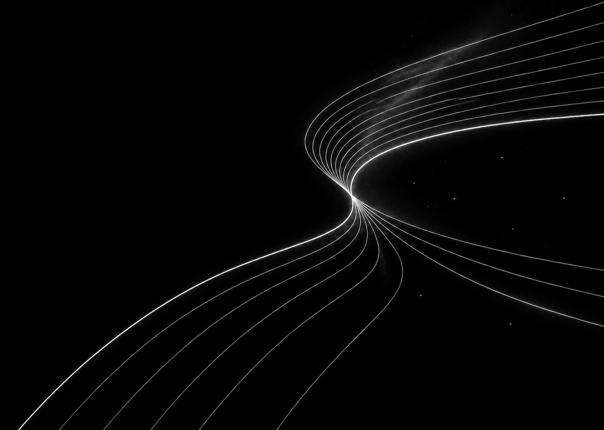

在场 · 未来观察站
向内观照，向外探索。
科学拓展可能，人决定走向何方。
就业创业办公室创业工作 · “种·未来”创客空间负责人

科学进入生活
从模型预测到实验验证，记录食品创业的真实探索。
意识、创造与责任｜哲学与神学思辨
如果 AI 能生成作品、作出选择，我们该如何理解创造、意识与责任？
这里先留下一组问题，之后再慢慢记录。关于可验证的能力，依靠科学研究；关于意义与信仰，允许哲学和神学的讨论，但不把思辨当作科学结论。
创业现场
孵化与陪跑 · 2025
从一次咨询、一场准入评审，到团队下一阶段的经营问题，陪创业者把想法逐步落到实际行动里。
赛事培育 · 2025
从校级海选到全国总决赛，组织项目筛选、集中特训、专家会诊和多轮材料打磨。
国际协作 · 2025
高校联络、作品评选和现场执行，在跨部门的共同推进中完成首届赛事。
最近的手记
工作里的一点观察，聊天后留下的问题，或某个还没想明白的念头。这里留给这些短短的记录。
关于创业、一个人的选择，或你觉得值得记下来的事情。